Find Your Inner Hipster
Start here
I'll have another. What are you having?
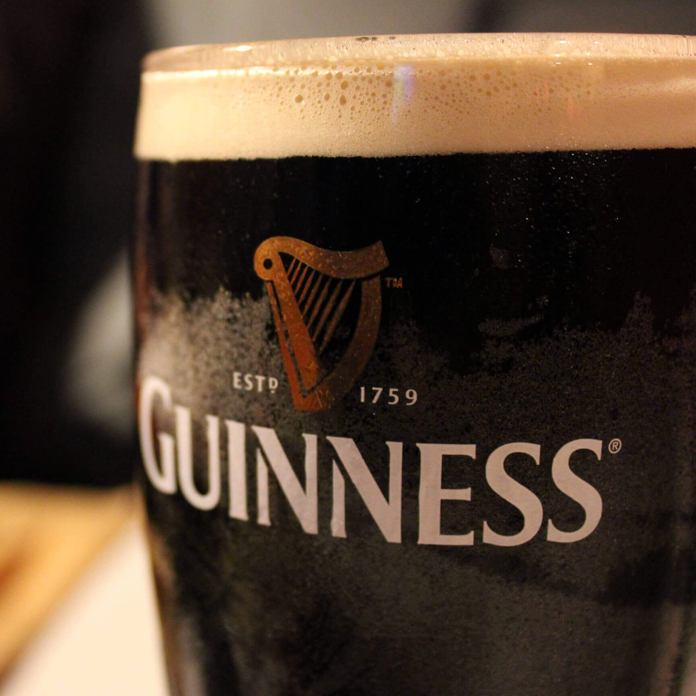
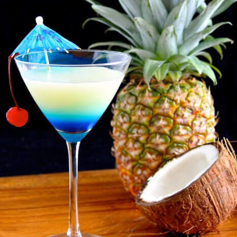
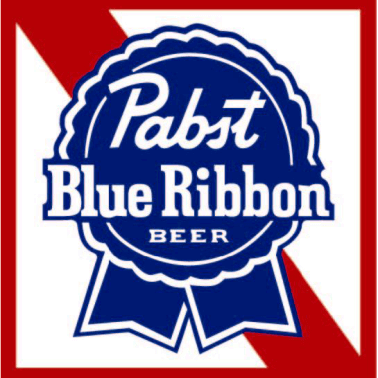
I've got mine on. What are you wearing?
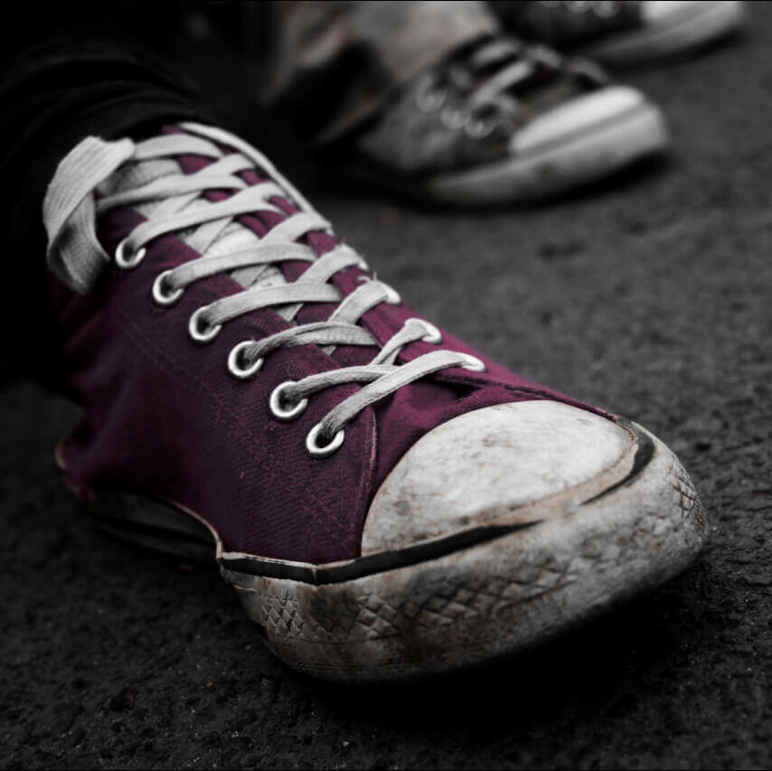
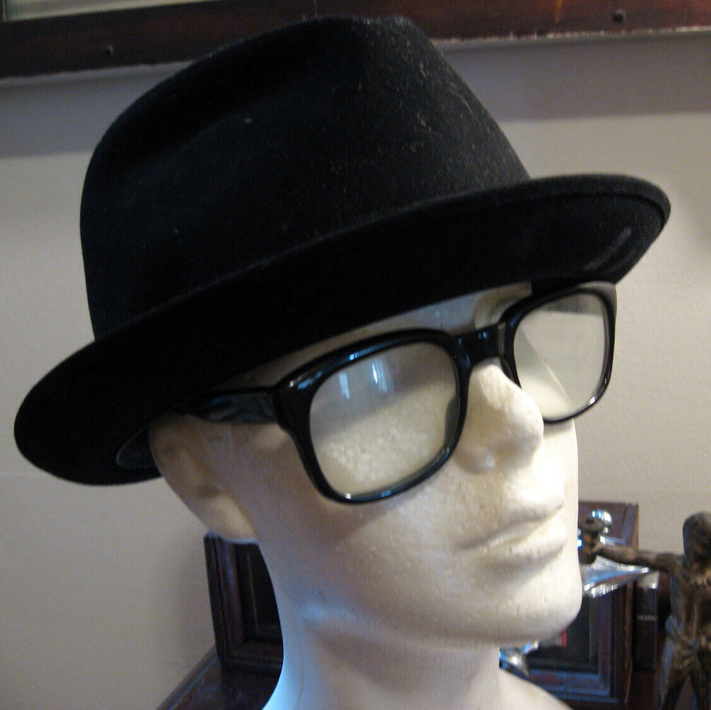
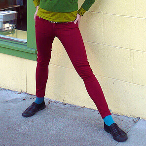
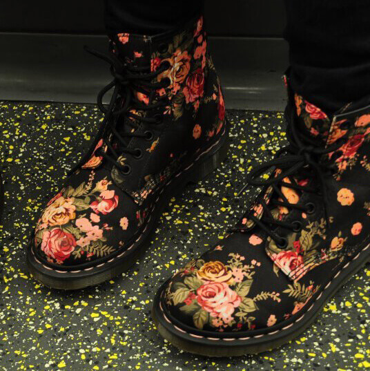
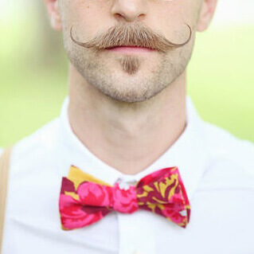
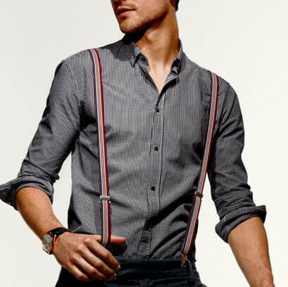
I like it loud. How do you prefer your music?
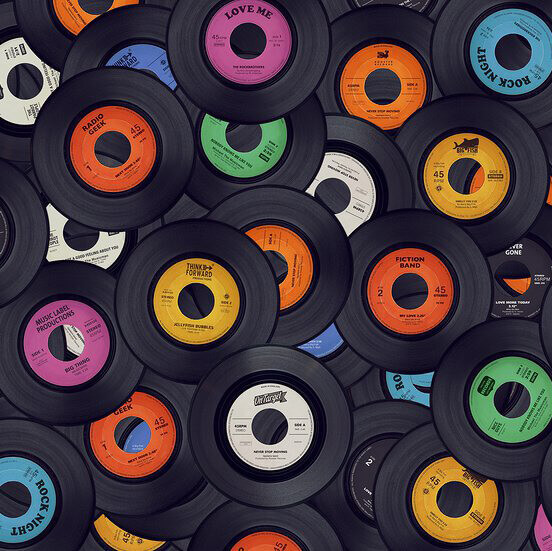
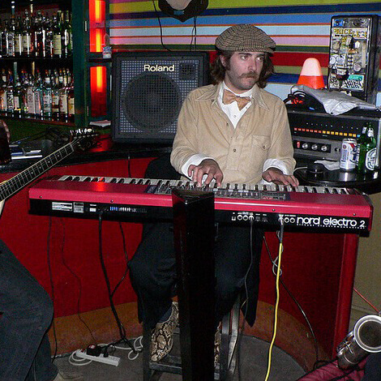
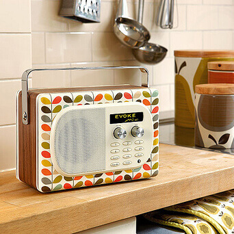
I just got to b. How do you leave a?
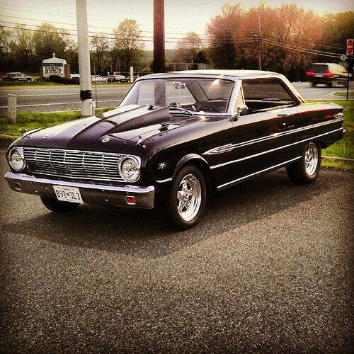
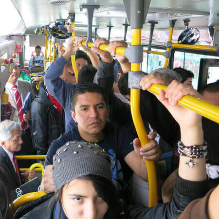
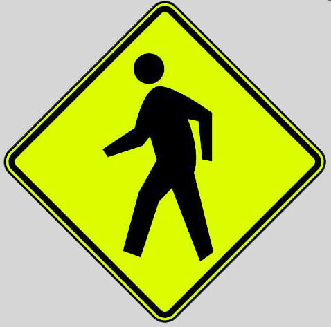
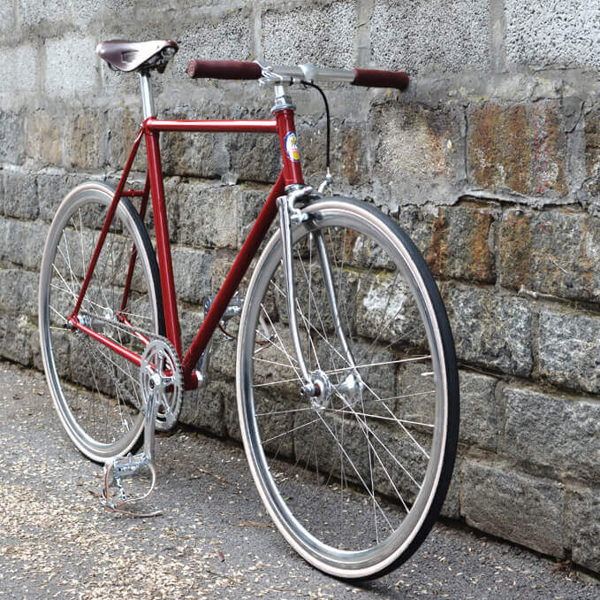
accessorize your style. Choose it if you have it or not!
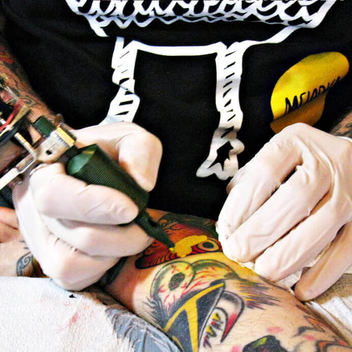
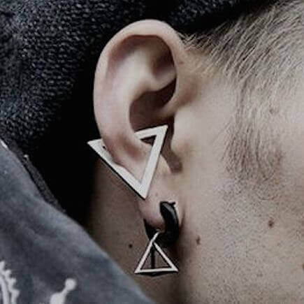
Retake Quiz